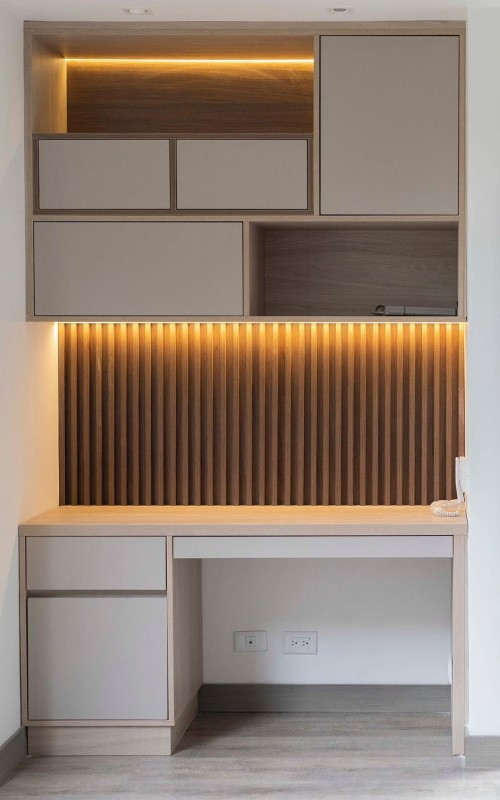
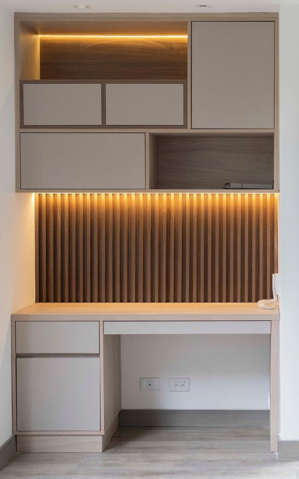
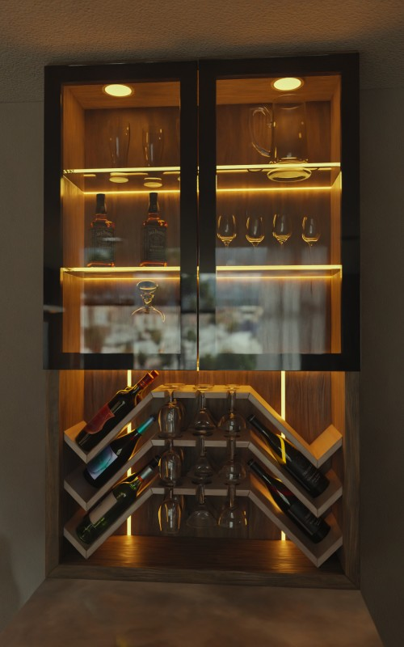
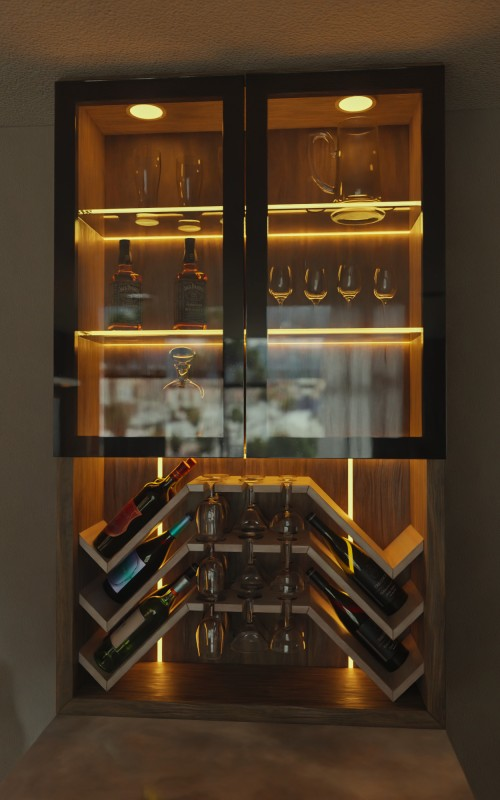

Estilo
Dos mundos, el antiguo y el nuevo
Nuestro estilo es el sincretismo de la estética minimalista con elementos tradicionales de diferentes culturas. Buscamos un estilo elegante y experimental que se aleje de la monotonía.
Aunque el estilo nordico y japonés son los estilos predominantes en el diseño de interiores, creemos que a lo largo de la historia han habido elementos culturales muy hermosos que con pleno derecho merecen revivir en su forma mas moderna y estilizada.
Tenemos las herramientas adecuadas para permitirnos una exploración formal, geométrica y orgánica profunda sin sacrificar el sello industrial y de calidad de nuestros productos.
 


 
